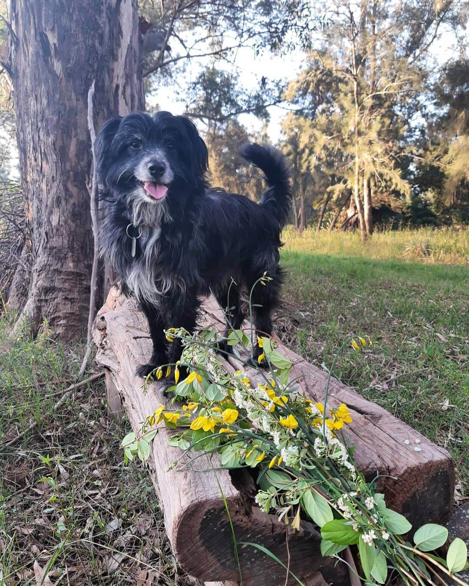

Nuestra Historia
Este proyecto nació con la intención de ayudar a nuestros amigos de cuatro patas que viven en situaciones de calle o abandono y poder brindarles una nueva oportunidad generando un vínculo que no solo le cambia la vida a ellos sino también a quienes lo reciban en su hogar.
Hay miles de casos y muchos refugios y agrupaciones de voluntarios que no dan a basto y por eso quisimos poner nuestro granito de arena brindando mayor visualización a los casos en adopción para poder generar nuevos espacios para ayudar a más mascotas en situaciones vulnerables.
La intención es crear una red entre refugios y redes de voluntarios para llegar a más personas y fomentar la adopción y concientización.
Nelly fue tirada en el campo en una zona bastante despoblada en Pergamino, con sus 9 hermanitos y su mama
cuando todavía no habían abierto los ojos. Vecinos de la zona los acomodaron en las ruinas de una casa abandonada
y les dieron de comer y cuidados pero estaban en una situación muy precaria sin un futuro posible.
Los fuimos a
buscar y los sacamos de ese lugar feo y luego de un baño, mucho polvo desparasitante y matapulgas y piojos casi
todos mejoraron y se convirtieron rápidamente en cachorros alegres y juguetones.
Con la ayuda de una agrupación
de voluntarios que nos ayudó publicando su caso y el de sus hermanitos, le encontramos hogar a casi todos. Pero
Nelly no había mejorado, solo pesaba 650 gramos, estaba muy desnutrida, no podía comer sola y casi no caminaba,
muy afectada por paracitos y bichos de todo tipo, por vivir a la intemperie.

